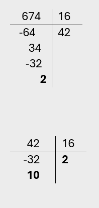

Convertir número Decimal a Binario y Hexadecimal
Binario:
Hexadecimal:
Ingresa el número a convertir según corresponda y oprime la tecla enter o con el mouse presiona el botón convertir correspondiente
Binario:
Hexadecimal:
Decimal:
Hexadecimal:
Decimal:
Binario:
Los números decimales tienen base 10 es decir, están representados por 10 símbolos:
0, 1, 2, 3, 4, 5, 6, 7, 8, y 9
Por ejemplo, el número 38 tiene base 10.
3810
Para realizar la conversión de un número con base 10 (Decimal) a un número con base 2 (Binario) de manera manual se debe dividir sucesivamente el número entre 2, si el número resultado de la división es decimal, no se tiene en cuenta la parte decimal, a partir de los resultados, si el número obtenido es par, se coloca 0, si es impar se coloca 1.
Ejemplo:
Convertir paso a paso el número
38 a binario:
Se divide entre
2 cada resultado hasta que el
resultado sea 0
| Convertir de decimal a binario | |||||
|---|---|---|---|---|---|
| 38/2 | 19/2 | 9/2 | 4/2 | 2/2 | 1/2 |
| 19 | 9.5 | 4.5 | 2 | 1 | 0.5 |
| 0 | 1 | 1 | 0 | 0 | 1 |
Acomodando los números de derecha a izquierda
100110
Entonces el número 3810 es igual a 100110 2
Por otro lado, los números binarios tienen base 2, están representados por dos símbolos:
0 y 1
Por ejemplo, el número 100110 tiene base 2
1001102
Ahora realizar la operación inversa, convertir número en base dos (binario) a un número base 10 (decimal), para ello se deben multiplicar potencias de 2 igual a la cantidad de dígitos del número binario, iniciando de derecha a izquierda, luego solo se tienen en cuenta los resultados en el que e número binario tenga un 1 para luego sumarlos
Ejemplo:
Convertir el número 101110 a
decimal:
Se organiza el número 2 con potencias
de derecha a izquierda:
| Convertir de binario a decimal | |||||
|---|---|---|---|---|---|
| 1 | 0 | 1 | 1 | 1 | 0 |
| 32 | 16 | 8 | 4 | 2 | 1 |
Sumando los resultados donde el número binario tenga 1
32 + 8 + 4 + 2 = 46
Entonces el número 1011102 es igual a 4610
Finalmente, los números hexadecimales tiene base 16, están representados por 16 símbolos que son:
| Números decimales | Números hexadecimales |
|---|---|
| 0 | 0 |
| 1 | 1 |
| 2 | 2 |
| 3 | 3 |
| 4 | 4 |
| 5 | 5 |
| 6 | 6 |
| 7 | 7 |
| 8 | 8 |
| 9 | 9 |
| 10 | A |
| 11 | B |
| 12 | C |
| 13 | D |
| 14 | E |
| 15 | F |
Por ejemplo, el número 2A2 tiene base 16.
2A216
Aunque estos no siempre llevan letra por ejemplo el número 25 en base 10 (decimal) seria el número 19 en base 16 (hexadecimal)
Para convertir un número de base 10 (decimal) a base
16 (hexadecimal), se debe dividir sucesivamente el
número entre 16, hasta que el número residuo de la
división sea menor a 16 teniendo en cuenta los
últimos residuos de la división y el último
resultado obtenido, se reemplazan por los números
hexadecimales, nota: no se tiene en cuenta la parte
decimal de la división.
Ejemplo:
Convertir el número decimal
674 a hexadecimal:
Teniendo
en cuenta que:
| 16 * 1 = 16 | 16 * 2 = 32 | 16 * 3 = 48 | 16 * 4 = 64 | 16 * 5 = 80 | 16 * 6 = 96 | 16 * 7 = 133 |
Entonces realizando la división:

Los números en negrilla (el ultimo resultado y los residuos en ese orden) se deben reemplazar según la tabla de los números hexadecimales
| Resultado | Número hexadecimal |
|---|---|
| 2 | 2 |
| 10 | A |
| 2 | 2 |
Entonces el número 67410 es igual a
2A216
Ejemplo:
Convertir el número
decimal 40 a hexadecimal:
Entonces realizando la división:

| Resultado | Número hexadecimal |
|---|---|
| 2 | 2 |
| 8 | 8 |
En este caso el número 4010sería el número 2816